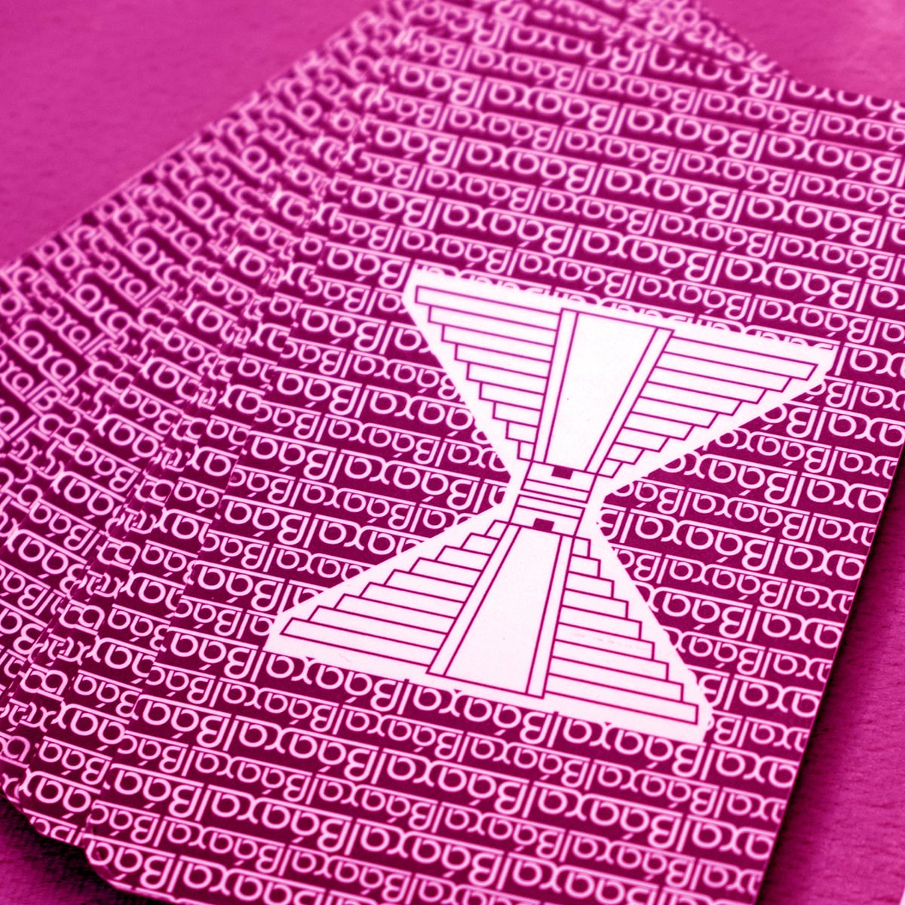
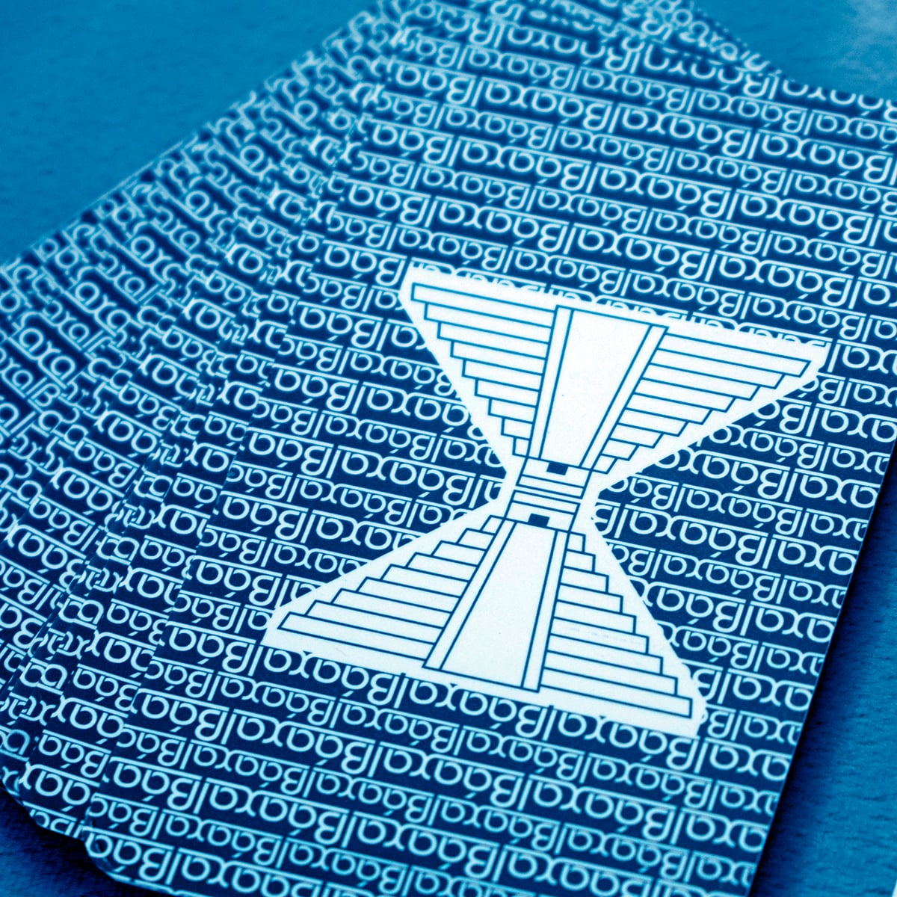
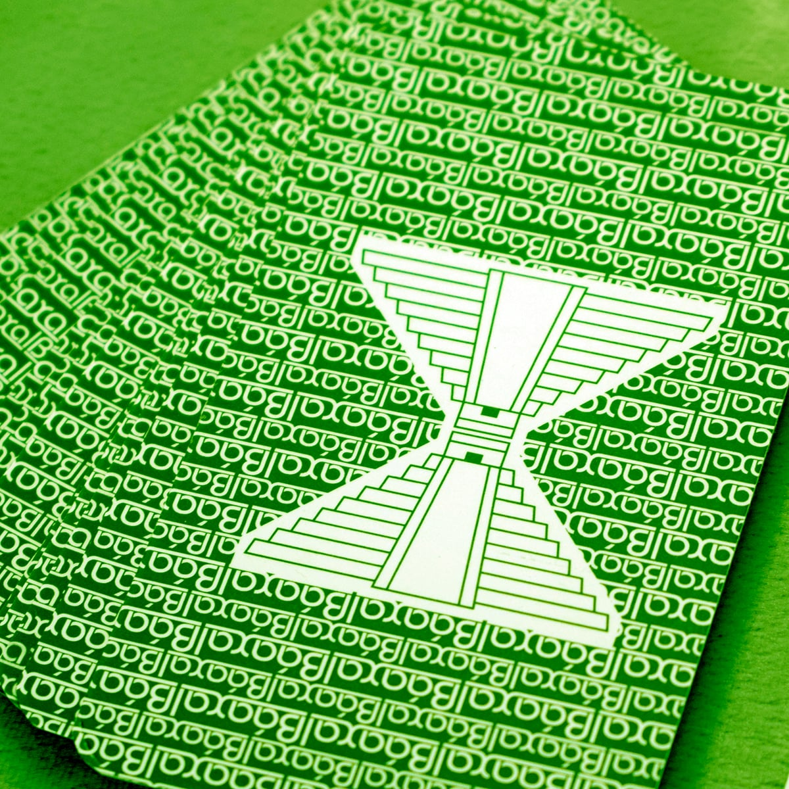

Nosotros
¿Quienes Somos?
Si bien soy el creativo, hace falta mucho más que capacidad de creación para que un producto llegue a las manos del lector, o, en este caso, del jugador. Toda la familia y muchos amigos son los que participan detrás de cada juego, probando, criticando y generando nuevas ideas. Muchas veces algo insignificante que se presenta durante la prueba de un juego, genera un cambio sustancial en él, o incluso sienta las bases de otro nuevo. Esa es la ayuda invalorable de todos aquellos que me rodean.

Un poco de historia
Como Angel Freire llegué a ser "marca registrada" del juego gráfico en nuestro país. Abocado al juego gráfico desde 1971, tantos años "jugando" permitieron hacerme de un enorme bagaje de ideas para juegos que necesitan un espacio que va más allá de las páginas de un medio: naipes, fichas, tableros, dados, movimientos. Las ideas se fueron guardando, se revieron, se probaron, volvieron a reverse, a probarse, hasta tener el producto que sé que puede gustarle a quien juega, así como durante tantos años lo hice brindándome de igual modo al lector. Con Báaxal llegó el momento de ofrecérselas.

Futuro
El futuro es creación, creación constante. Creé decenas de juegos de palabras, de lógica y matemáticos que se publicaron durante muchísimos años en muchísimos medios. Por ahora, solo llevo creados una veintena de nuevos juegos no gráficos, así que falta mucho para llegar a varias decenas. En el camino habrá guerras, gnomos, piratas, brujas, monstruos y un sinfín de elementos. Ese es el horizonte.
